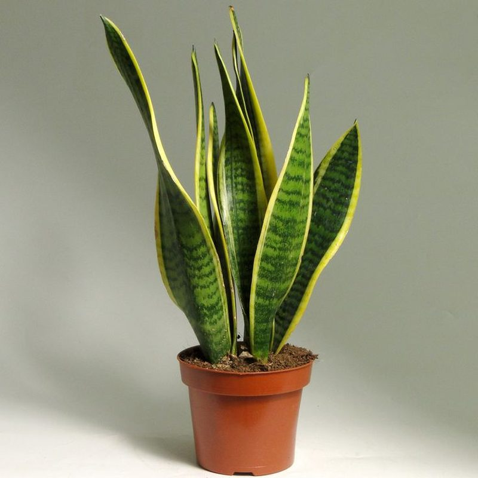
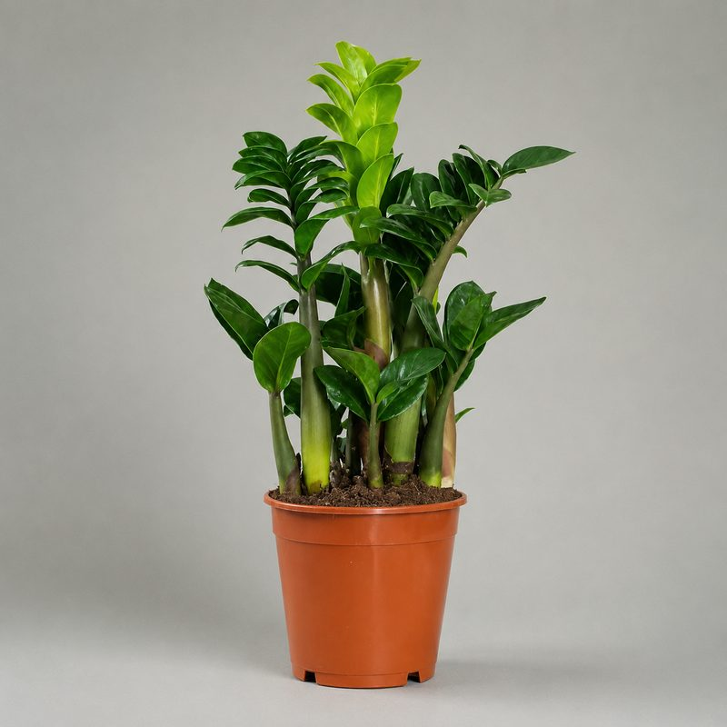
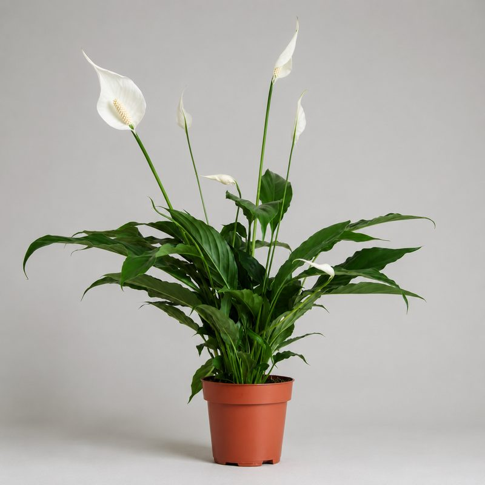
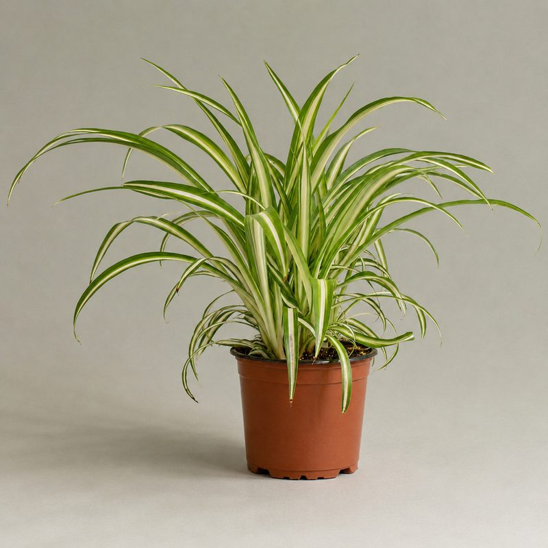
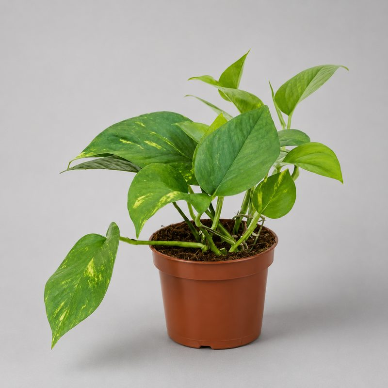
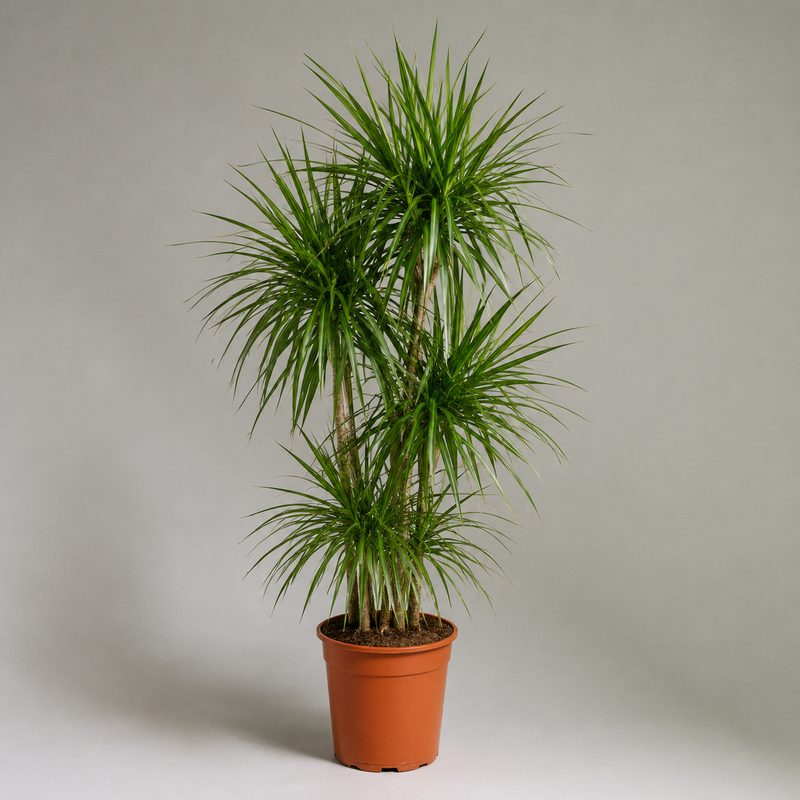

Сансевиерия (тёщин язык)
Самое неприхотливое растение: терпит тень и редкий полив.
от 450 сомцена-ориентир
Заказать
Подробнее об уходе →
Комнатные растения · Бишкек
Неприхотливые и цветущие домашние растения в горшках. Подберём под ваш свет и комнату, привезём по Бишкеку и расскажем, как ухаживать.
Каталог

Самое неприхотливое растение: терпит тень и редкий полив.

Глянцевые листья, выживает у занятых. Любит свет, не любит залив.

«Женское счастье» — цветёт белыми покрывалами, любит влажность.

Быстрорастущий, чистит воздух, прощает ошибки в уходе.

Ампельная лиана для полки и стеллажа, растёт в полутени.

Стройная пальмовидная форма, подходит для подоконника и пола.
Не проблема: в наличии больше, чем на сайте — каталог ещё пополняется. Напишите в WhatsApp, что нужно — найдём и привезём под заказ.
Цены указаны ориентировочно — точное наличие, размеры и стоимость пришлём в WhatsApp за пару минут.
Напишите, что ищете и для какой комнаты — подберём и доставим по Бишкеку.
О категории
Tamyr — магазин комнатных растений в Бишкеке. У нас можно купить домашние растения и комнатные цветы в горшках: неприхотливые сансевиерию, замиокулькас и хлорофитум для тех, кто часто в разъездах, и цветущие спатифиллум и антуриум для уюта. Маленькие растения для подоконника и стола, крупные напольные — для гостиной.
Все растения мы выращиваем и подращиваем сами, поэтому честно подскажем, что приживётся именно у вас. Доставим комнатные растения по всему Бишкеку, к каждому приложим памятку по поливу и свету. Не знаете, что выбрать — напишите в WhatsApp, и мы подберём растение под ваше освещение, уход и бюджет.
Смотрите также
Частые вопросы
Для занятых и новичков лучше всего подходят сансевиерия, замиокулькас, хлорофитум и эпипремнум — они терпят тень и редкий полив. Подскажем выбор под ваш свет в WhatsApp.
Да, доставляем по всему городу. Заказать можно через WhatsApp, оплата переводом или при получении.
Да, бесплатно. Расскажите про окна и освещение — предложим варианты, которым будет хорошо именно у вас.